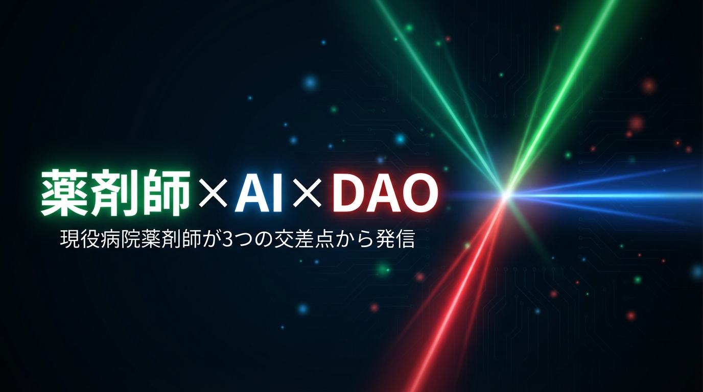

アースキー | 現役病院薬剤師 × AIクリエイター

医療 × AI × DAO の交差点から発信する
💊 現役病院薬剤師
🤖 AIクリエイター
🥷 NinjaDAO
AIツールを日常的に実践・発信。Note・Podcast・Xを中心に、
医療従事者目線のAI活用情報をお届けしています。
発信チャンネル
Works
About
現役病院薬剤師。AIツールを日常的に実践・検証しながら発信しています。
NinjaDAOコミュニティで活動中。医療 × AI × DAO を軸に情報発信。
STORY
情報発信を始めたのは、現場で感じた「もどかしさ」がきっかけでした。
病院薬剤師として働く中で、医療従事者が事務作業に追われ、患者さんと向き合う時間が削られていく現実を目の当たりにしました。
「AIがあれば、この現状を変えられるかもしれない。」
そう確信してから、AIツールを実践・検証しながら発信を続けています。NinjaDAOとの出会いが、AI×創作という新しい可能性を開いてくれました。
医療 × AI × DAO。この3つの交差点から、現場目線の情報を届け続けること。それがアースキーとしての使命です。